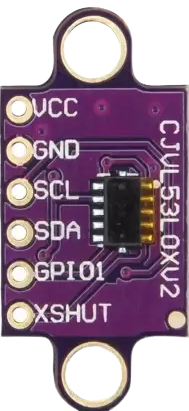
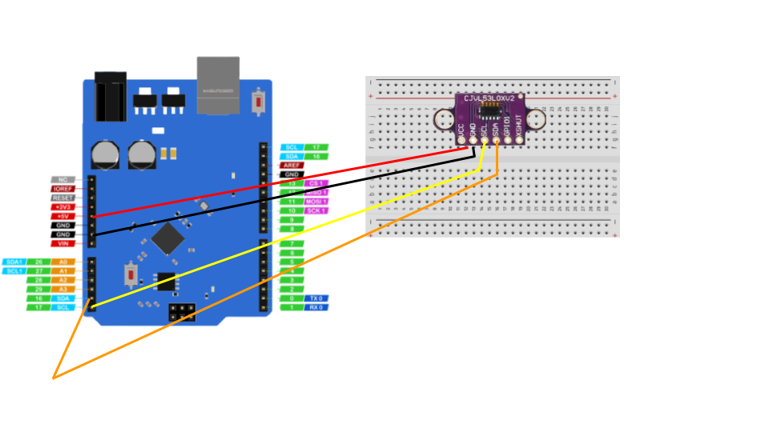

Distance using VL53L0X sensor
We will measure distance using VL53L0X Sensor
hardware required
| Item | Quantity |
|---|---|
UNO 2040 |
1 |
UNO 2040 USB cable |
1 |
800pin Breadboard |
1 |
VL53L0X Sensor |
1 |
male to male jumpers |
4 |
About VL53L0X

The VL53L0X is a new generation Time-of-Flight (ToF) laser-ranging module providing accurate distance measurement whatever the target reflectances, unlike conventional technologies.
Circuit diagram

Note
The coloured lines represent male to male jumper cables.
Importing libary and making variable
#include "Adafruit_VL53L0X.h"
Adafruit_VL53L0X lox = Adafruit_VL53L0X();
Note
Install Adafruit VL53L0X Libary
Setting up serial monitor and VL53L0X sensor
void setup() {
Serial.begin(115200);
// wait until serial port open for native USB devices
while (! Serial) {
delay(1);
}
Serial.println("Adafruit VL53L0X test");
if (!lox.begin()) {
Serial.println(F("Failed to boot VL53L0X"));
while(1);
}
// power
Serial.println(F("VL53L0X API Simple Ranging example\n\n"));
}
Main loop
void loop() {
VL53L0X_RangingMeasurementData_t measure;
Serial.print("Reading a measurement... ");
lox.rangingTest(&measure, false); // pass in 'true' to get debug data printout!
if (measure.RangeStatus != 4) { // phase failures have incorrect data
Serial.print("Distance (mm): "); Serial.println(measure.RangeMilliMeter);
} else {
Serial.println(" out of range ");
}
delay(100);
}
click on upload icon and the code will upload in uno2040 and open serial monitor you will see the distance from sensor in serial monitor
Complete code
Copy the complete code from below
Complete code
#include "Adafruit_VL53L0X.h"
Adafruit_VL53L0X lox = Adafruit_VL53L0X();
void setup() {
Serial.begin(115200);
while (! Serial) {
delay(1);
}
Serial.println("Adafruit VL53L0X test");
if (!lox.begin()) {
Serial.println(F("Failed to boot VL53L0X"));
while(1);
}
Serial.println(F("VL53L0X API Simple Ranging example\n\n"));
}
void loop() {
VL53L0X_RangingMeasurementData_t measure;
Serial.print("Reading a measurement... ");
lox.rangingTest(&measure, false);
if (measure.RangeStatus != 4) {
Serial.print("Distance (mm): "); Serial.println(measure.RangeMilliMeter);
} else {
Serial.println(" out of range ");
}
delay(100);
}
Activity
Question
Try printing distances in meters